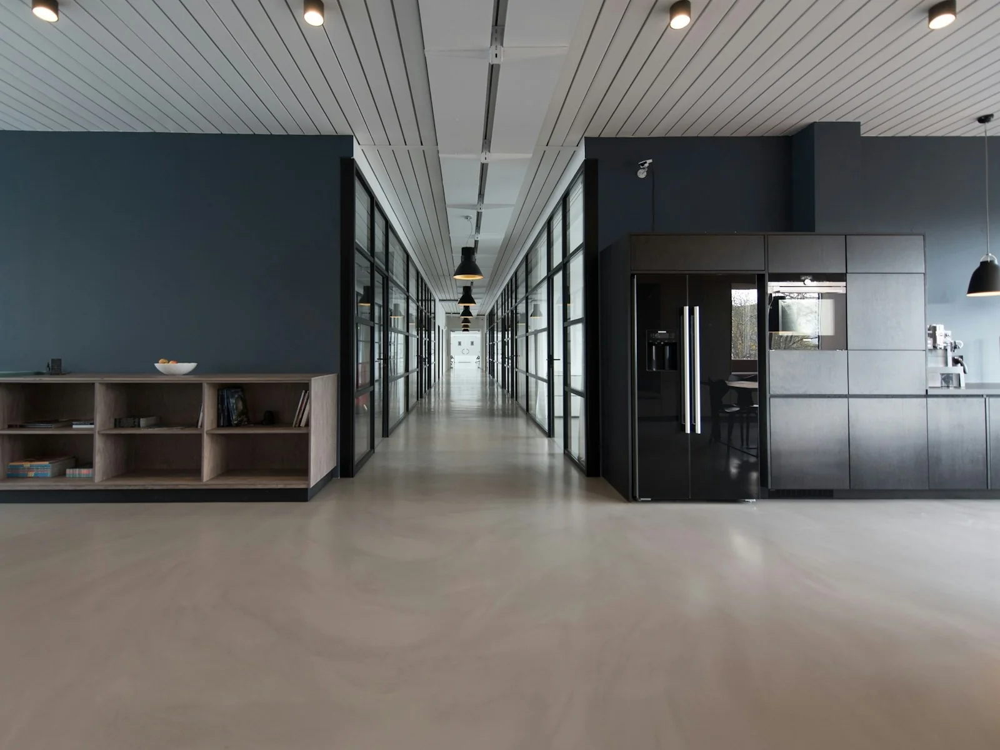
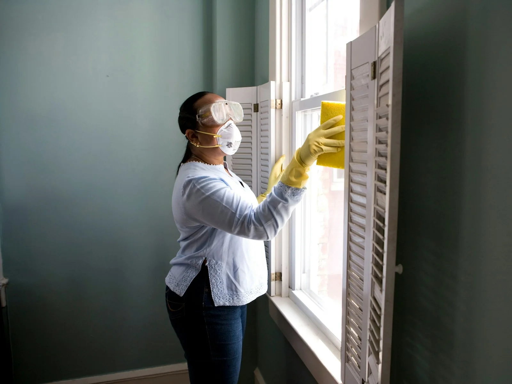

Interior painting
Walls, ceilings, trim, doors and whole-home repaints with room protection and cleanup.
Interior services ↗RESIDENTIAL + COMMERCIAL PAINTING
Vinnik Net is rebuilt here as a professional Denver painting company with detailed service scopes instead of generic packages.
A BETTER PAINTING WEBSITE
This version is organized around actual painting decisions: surfaces, prep, finish, access, schedule and project type.
CORE SERVICES
Each service links into a larger, coherent service catalog.
Walls, ceilings, trim, doors and whole-home repaints with room protection and cleanup.
Interior services ↗Siding, trim, doors and compatible exterior surfaces with prep matched to condition.
Exterior services ↗Degreasing, labeling, prep and cabinet-grade coating systems for kitchens and built-ins.
Cabinet services ↗Offices, retail, property turnovers and maintenance painting with phased scheduling.
Commercial services ↗
INTERIOR
Furniture, floors, hardware and adjacent surfaces need a plan. The site now explains prep as part of the service rather than hiding it behind a generic premium package.
PROJECT FLOW
Surfaces, colors, access, repairs and project goals.
Areas, prep assumptions, exclusions and finish system.
Protection, cleaning, repairs, sanding and primer where needed.
Coating application with checkpoints before final completion.
Punch-list items, cleanup and project handoff.
SCOPE BUILDER
Save services from the catalog and carry them into the estimate form. Everything stays local in the browser in this demo.
Open service catalogPROJECT TYPES


SERVICE CATALOG
Pricing is demo/starting-price content until replaced with verified business rates.
Walls, ceilings and standard room repainting with masking and cleanup.
Flat and textured ceiling repainting with edge protection and fixtures masked.
Single-wall color change or feature wall with crisp cut lines.
Baseboards, casing and architectural trim prep and repainting.
Interior door prep and finish coats, hardware protected or removed as scoped.
Rails, balusters and handrails with detailed prep and finish work.
Coordinated room-by-room repainting for occupied or empty homes.
Pre-move painting planned around flooring, cleaners and move-in dates.
FAQ
Yes. Surface condition, repairs, previous coatings, access and protection needs can materially change scope and labor.
That depends on the room and agreed scope. The final estimate should state what the customer moves and what the crew protects or relocates.
The real contractor should define approved products, warranties and material-responsibility rules in the final agreement.
Older coatings and pre-1978 surfaces may require additional assessment and lead-safe procedures. Verify the contractor’s actual certifications and local requirements.
ESTIMATE
Rooms, condition, colors, access and desired timing help create a much better estimate request.